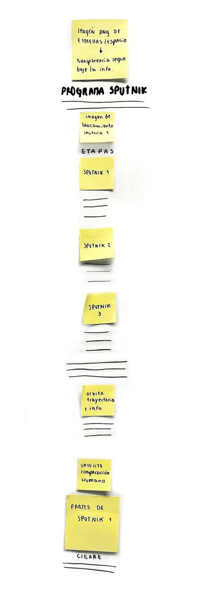

Un pequeño paso para nuestra infografía
Mediente un storyboard con la información previamente recabada, es que comenzamos a organizar el como se verá está información para que sea entendible y legible.

El proyecto Sputnik fue un programa ruso compuesto por diversas misiones en las cuales se mandaron diversos satélites al espacio con el fin de comprenderlo y ver que tan viable eran los viajes espaciales.
Elegimos este programa por lo interesante que es, por ser el detonante de la carrera espacial que se desató en 1955 y por los distintos objetivos que tenía cada una de las misiones.
Mediente un storyboard con la información previamente recabada, es que comenzamos a organizar el como se verá está información para que sea entendible y legible.
Cada integrante se encargó de crear un boceto de cómo colocaría la información a su juicio. Esto es para tener un primer alcance y compararlos para sacar las mejores ideas de cada uno.
Como siguiente paso, formamos duplas para comparar y rescatar las mejores ideas, creando dos nuevos bocetos que se van acercando más a la idea grupal.
Tras tantas pruebas y errores, como grupo, se discutió sobre las mejores características que cada integrante propuso, dejando como resultado un boceto final el cual será más fiel a la idea de la infografía que como grupo queremos presentar.